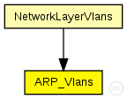

This documentation is released under the Creative Commons license
This documentation is released under the Creative Commons licenseTODO auto-generated module
The following diagram shows usage relationships between types. Unresolved types are missing from the diagram. 
The following diagram shows inheritance relationships for this type. Unresolved types are missing from the diagram.
If a module type shows up more than once, that means it has been defined in more than one NED file.
| NetworkLayerVlans (compound module) |
Network layer of an IP node. |
| Name | Type | Default value | Description |
|---|---|---|---|
| retryTimeout | double | 1s |
number seconds ARP waits between retries to resolve an IP address |
| retryCount | int | 3 |
number of times ARP will attempt to resolve an IP address |
| cacheTimeout | double | 120s |
number seconds unused entries in the cache will time out |
| proxyARP | bool | true |
sets proxy ARP mode (replying to ARP requests for the addresses for which a routing table entry exists) |
| globalARP | bool | false |
| Name | Value | Description |
|---|---|---|
| display | i=block/layer |
| Name | Direction | Size | Description |
|---|---|---|---|
| ipIn | input | ||
| nicOut [ ] | output |
// // TODO auto-generated module // simple ARP_Vlans { parameters: double retryTimeout @unit("s") = default(1s); // number seconds ARP waits between retries to resolve an \IP address int retryCount = default(3); // number of times ARP will attempt to resolve an \IP address double cacheTimeout @unit("s") = default(120s); // number seconds unused entries in the cache will time out bool proxyARP = default(true); // sets proxy \ARP mode (replying to \ARP requests for the addresses for which a routing table entry exists) bool globalARP = default(false); @display("i=block/layer"); gates: input ipIn; output nicOut[]; }
This documentation is released under the Creative Commons license